URCODEの技術・導入
に関する詳細回答
デジタルピア様からの追加のご質問への回答と活用のご提案
株式会社デジタルピア ご担当者の皆様
対象：2026年10月7日付の追加のご質問および活用アイデア
これまでの回答の訂正事項を反映し、より詳しい回答資料を作成いたしました。
日本でのURCODEの導入をご検討いただき、誠にありがとうございます。お問い合わせいただいた費用、読取距離、不可視コードの読み取り、マルチスキャンおよびカメラ連携についてご説明するとともに、貴社からご提案いただいた工場内での作業者識別や入退場管理への活用方法をご案内いたします。
01コード利用料と導入費用
Q1. 「商品1億個で5,000万」の意味
日本円を基準にご説明した金額を換算すると、商品1億個で5,000万円、商品1個当たり0.5円となります。これは当初ご案内した大量供給の例であり、基本的には発行するURCODEの数量に応じたコード利用料をいただく仕組みです。
| 費用項目 | 算定内容 |
|---|---|
| コード発行・利用 | コードの種類、発行数量、利用目的および契約期間 |
| 印刷・加工 | 製品への直接印刷、ラベル、レーザーマーキングなどの適用方法 |
| システム利用 | コード管理、照会、ダッシュボードおよび運用機能 |
| 機器・設置 | カメラ、レンズ、照明および現場での設置範囲 |
| 開発・連携・サポート | 映像入力、業務システムとの接続、保守・研修の範囲 |
0.5円はコード利用料をご相談する際の参考値であり、印刷・機器・開発をすべて含む一括単価ではありません。最終のお見積もりでは、適用通貨と数量、税金、再発行・再印刷の取り扱い基準まで明確にご提示します。
2025年公開インタビューでの料金体系と価格例
キム・ソンス代表は、料金体系をコード件数に応じた利用料＋管理プラットフォーム利用料＋カスタマイズ開発費と説明しています。以下は2025年のインタビューで紹介された韓国ウォン建ての例です。先にご案内した日本向け大量供給の例である1個当たり0.5円とは、契約条件を区別して適用します。 [1]
| 項目 | 2025年の公開例および課金方法 |
|---|---|
| コード利用ライセンス | 製品1個当たりのコード埋め込み単価は約90ウォン。コード件数に応じて課金し、年間ライセンス契約で運用 |
| 管理プラットフォーム | 基本機能は無料。高度な機能は月額30万〜200万ウォン。サイトまたは機能単位で利用範囲を構成 |
| カスタマイズ開発・連携 | 生産ライン診断、OEMコード埋め込み、既存システムとの連携など、プロジェクトの範囲に応じて開発費用を算定 |
貴社には、コード発行数量、プラットフォーム機能、カメラ・システム連携の範囲を分けてご提示し、初期検証と本格導入それぞれの予算を設計いただけるようにします。
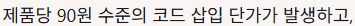
日本語訳：製品1個当たり約90ウォンのコード埋め込み費用が発生します。
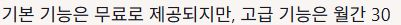
日本語訳：基本機能は無料ですが、高度な機能には月額30万〜200万ウォンの料金がかかります。
Q2. 少量からの導入も可能ですか？
少量のサンプルから導入できるプランをご提案します。必要な数量と初期機能に合わせて、コードファイルの提供、印刷ラベル、カメラでの読み取りおよび管理画面をお選びいただけます。最低発注数量と初期費用は、お選びいただいた構成に応じてご提示します。
実際の少量導入向けのお見積もりには、URCODEステッカー100枚とテスト用10枚で構成した例があります。このように少量のサンプルを先に適用し、読み取り方式や運用の流れに合わせて数量を増やすことができます。貴社の初期検証も、必要な人数・製品数と印刷仕様に合わせて構成します。 [8]
- 1. サンプル適用コード・印刷方法を選択
- 2. 小規模運用出入口・通路から導入
- 3. 適用拡大人数・エリア・数量を拡大
小規模な範囲で運用を始め、同じコード管理体系とデータ構造を活用しながら、工場全体へ広げていく方法をお勧めします。
02近距離から産業用の遠距離読み取りまで
Q3. 不可視URCODEはどのくらいの距離まで読み取れますか？
読み取り距離は、コードの大きさと適用面積、パターン設計、読み取り機器に応じて伸ばすことができます。先にご案内した3cm × 3cmのコードで約9〜12cmという距離は、小型の不可視コードの使用例であり、URCODE全体の読み取り距離の上限ではありません。
| 適用構成 | 読み取り距離・性能 | 各数値の前提・適用条件 |
|---|---|---|
| 小型の不可視コード | 約9〜12cm | 3cm × 3cmのコードについて当初ご案内した値。近づけて提示する使い方に適しています |
| プラスチックのインビジブル試験片 | 最大60cm | 固定した試験片を、iPhone 14 Pro・UREKAと一般的なオフィス照明で安定して読み取れた結果 [6] |
| 表面への適用範囲を広げたインビジブル | 約150cm | 製品の表面にコードの適用領域を広げた公開事例 [2] |
| 産業用UR MultiScan | 1.5〜3m以上 30個以上の同時処理 | 遠距離・複数同時読み取り向け産業用ソリューションの紹介仕様 [5] |
各数値は、異なるコードと撮影構成で得られた結果です。打ち合わせで実演した約30cmも、その際の構成での距離です。小型コードから遠距離向けの産業用構成まで、目的に合わせてお選びいただけます。
作業服への適用では「面積と位置」を組み合わせて活用します
名札サイズのコードは近距離での確認に、胸部・背面のような広い領域を使うコードは通路での遠距離識別に適用する方法です。印刷面積、パターン密度、カメラの画角を一体で設計することで、利用者がカメラに近づく動作を減らすことができます。
- 名札・ラベル近距離での入退場確認
- 胸部・背面撮影できる機会を増加
- 出入口・通路遠距離からの自動読み取り
貴社の作業服と動線に合わせた適用のご提案です。用途に応じてコード形式と読み取り構成を選定します。
作業服に関する貴社のアイデアには、特に繊維素材への適用経験を活かせます。作業服の生地、名札、貼付ラベルの中から現場の運用に適した方法を選び、着用した状態で撮影しやすい位置と面積を併せて設計します。
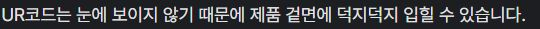
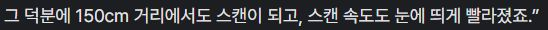
日本語訳：URCODEは目に見えないため、製品表面のあちこちに施すことができます。その結果、150cm離れていてもスキャンでき、スキャン速度も目に見えて速くなりました。
03不可視コードの仕組みとマルチスキャン
Q4. 不可視コードの仕組みと撮影した写真の読み取り
不可視URCODEは、デジタル画像に微細な電子透かし状のパターンを合成して情報を埋め込みます。既存のデザインになじむようにパターンの目立ち方を調整できるため、製品や作業服の外観を自然に保ちながら、識別機能を付加できます。
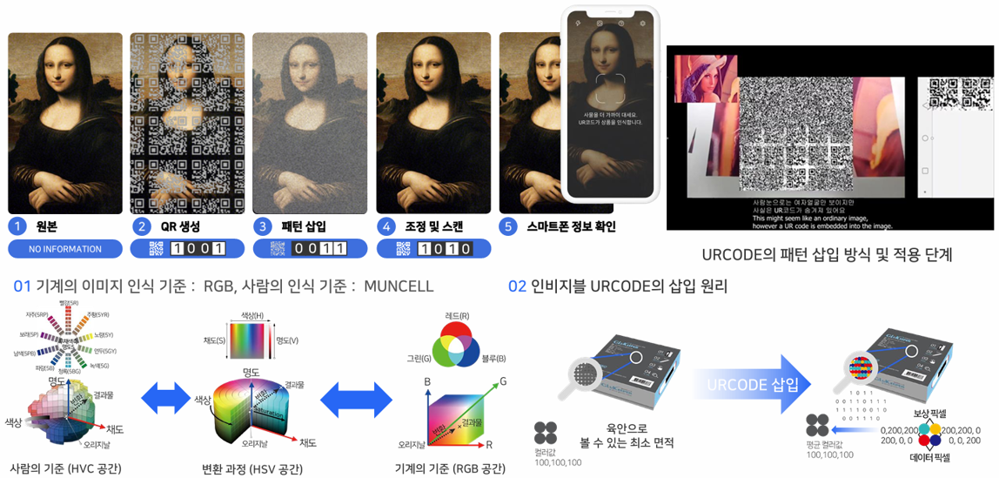
撮影した写真でも、コードの情報が十分に保持されていれば読み取りが可能です。 リアルタイムのカメラ映像に加え、保存した画像ファイルを読み取りエンジンに入力する構成にも対応できます。画像の解像度、ピント、圧縮の程度を考慮し、アプリや業務ソフトウェアに写真の読み取り機能を組み込みます。
Q5. 不可視URCODEもマルチスキャンに対応していますか？
対応しています。産業用UR MultiScanには、インビジブルのマルチスキャン機能が含まれています。 先に不可視コードのマルチスキャンには対応していないとご案内した点を訂正いたします。小型コードの単体読み取りとは別に、産業用のインビジブル・マルチスキャンを提供しており、複数の対象を同時に読み取る貴社の用途に合わせてご提案いたします。
マルチスキャンは、複数の製品やコードを一つの画面で同時に読み取る方式です。高速な読み取りと複数コードの同時処理を組み合わせることで、在庫確認・入出庫・移動対象の識別に伴う繰り返し作業を減らせます。 [1, 5]
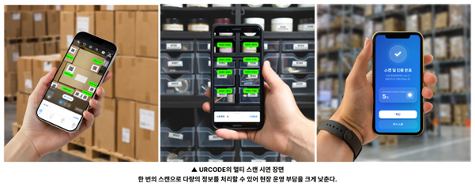
| 読み取り構成 | 適した用途 |
|---|---|
| 不可視コードの単体読み取り | 名札・作業服を近づけて提示する入退場確認、製品の個別照会 |
| 産業用インビジブル・マルチスキャン | 複数の製品・ラベルの同時読み取り、在庫・入出庫処理 |
| 高速・遠距離マルチスキャン | 指定の撮影区間で移動対象を連続して識別する用途 |
コードの読み取り結果に登録情報、利用権限、時刻・場所、繰り返しスキャンされた履歴を紐付けることで、入退場管理・真贋認証・流通追跡サービスへと拡張できます。
セキュリティ：複製耐性と利用履歴分析の組み合わせ
URCODEは、独自のコード構造と微細なパターンにより、複製・再利用の難易度を高めます。さらに、スキャン回数・位置・時刻・繰り返し利用のパターンを分析するサーバー側の管理を組み合わせ、流通上の異常の兆候を検出します。例えば、同じコードが短時間に複数の地域で繰り返し使用されるパターンを、運用担当者が把握できます。 [4]
製品ごとの固有コードが持つ複製耐性と、ネットワーク上の履歴分析を併用することで、単純なコード照会から真贋認証・流通追跡・再利用管理へと機能を拡張できます。入退場管理への応用では、この仕組みに利用者登録、権限、コードの無効化、入退場記録を紐付けます。
04既存の映像と業務データの連携
Q6. ネットワークカメラや監視カメラでも利用できますか？
ネットワークカメラの映像をURCODE読み取りソフトウェアと連携させて利用できます。 カメラで撮影した映像からコードを読み取り、コード値、時刻、撮影地点を業務システムに渡す方式です。
- カメラで読み取り映像からURCODEを認識
- 作業者IDの確認登録情報・権限との紐付け
- 入退場・作業履歴時刻・地点・イベントの記録
既存のカメラや印刷工程を活用することで、初期構築の負担を抑えられます。各撮影地点に合わせてレンズと照明を構成し、必要な箇所には専用カメラを追加することで、効率的な設備構成をご提案いたします。
| 設計項目 | 構成の検討内容 |
|---|---|
| 撮影区間 | 通路の幅、移動方向、コードの取付高さ、目標距離 |
| カメラ・レンズ | 映像内でのコードの大きさ、解像度、画角、ピント |
| 移動対象の撮影 | 撮影速度、露出と照明、動きによるブレ・反射への対策 |
| 読み取り・記録処理 | 映像入力、単体・複数コードの読み取り、重複記録の処理、イベントの保存 |
| 業務システム | 利用者登録、権限管理、入退場・エリア間移動の履歴、API連携 |
生成から読み取り・管理までをつなぐプラットフォーム
INOFRIENDSは、コードの生成・埋め込み・スキャン・管理をつなぐ技術を提供しており、ダッシュボードとAPIを通じてERP・MESなどの業務システムと連携できます。工場では、製品・作業の履歴と作業者の識別結果を、同じ業務フローの中で活用できます。 [1]
05株式会社デジタルピア様からの活用アイデア
指定通路を移動する人員の識別
移動中の対象を認識する際には、一般的なQRコードや可視コードの方が有利であると一律にご説明した点を訂正いたします。URCODEは、不可視・ライン・カラーコードと産業用の読み取り技術を備えており、高速スキャン、広い撮影範囲、同時読み取り機能を活用することで、通過時の識別に適した構成を実現できます。
移動中の対象は、カメラにコードが映る時間が短くなります。高速スキャンはこの短い機会を捉え、遠距離認識は撮影区間を広げ、マルチスキャンは同時に映り込む複数のコードを処理します。この点から、貴社の通過時の識別用途にURCODEを積極的にご提案いたします。
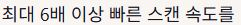
日本語訳：最大で6倍以上速いスキャン速度。
| 活用分野 | ご提案する構成と期待される効果 |
|---|---|
| 工場内のエリア間移動 | 作業服の胸部・背面またはラベルに付与したコードと通路のカメラを連携させます。通過時刻と撮影地点を記録し、作業エリアごとの移動履歴を管理します。 |
| 保護具を着用した状態での入退場 | マスク・保護メガネ・手袋を着用したまま、名札や作業服をカメラに提示します。保護具を外したり指を当てたりする動作を減らし、登録済みの権限情報と連携させます。 |
| 介護施設・保育施設 | 出入口、各階の通路、活動室などの確認地点に適用します。利用者・職員の名札・衣服・ラベルを通じて、対象者ごとに直近で確認された地点と時刻を運用画面に表示します。 |
作業服のコードがカメラに映る機会を増やせるよう、付与位置と撮影方向を併せて設計します。保護具の着用環境、複数の人が行き交う通路、繰り返し発生する移動の記録など、貴社の運用条件に合わせて構成できます。
RFID・一般的なQRコードと比較したご提案のポイント
| 比較の観点 | URCODEでご提供できる価値 |
|---|---|
| 認識効率 | 従来のQRコードと比較して最大で6倍以上速いスキャン性能と、遠距離・複数同時読み取りの組み合わせ [1, 5] |
| 導入構成 | 作業服・名札・製品に印刷する識別方式。既存のカメラ・印刷設備を活用し、専用タグ・リーダーを中心とした構成とのコスト比較が可能 |
| デザインへの配慮・運用の拡張 | 目立ちにくいインビジブル方式の適用、映像で検出したイベントと登録情報の連携、入退場・物流・製品管理への展開 |
URCODEは、コードが撮影される地点を中心に識別を行う光学式の方式です。貴社の出入口・指定通路で求められる処理目標を基準に、タグ・印刷、機器、構築および運用の各費用を比較し、コスト面での競争力をご提示いたします。
06製品の識別から運用データの活用へ
利川（イチョン）市の従量制指定ごみ袋：真贋認証と生産・流通管理
利川（イチョン）市の従量制指定ごみ袋に、個別のシリアル番号を付与するURCODEを適用し、正規品の確認と生産・発注・在庫・流通管理につなげた事例です。既存の印刷機とスマートフォンを活用するため、別途識別媒体を追加する負担を抑え、生産段階から現場での照会まで同じコードで管理できます。[7]
従量制指定ごみ袋向けソリューションは、生産と同時に全数をスキャンして印刷不良を検出し、後工程に進む前に不良品を選別する機能を提供します。物流現場では、ポータブルスキャナーで離れた位置にある複数の袋を一度に読み取り、在庫・出荷状況を処理できます。[4]
この構成は、既存設備の活用、生産中の品質確認、現場での一括読み取りを通じて、コストと作業負担の軽減を図るものです。貴社の工場への適用においても、印刷設備・カメラの活用とデータ連携を併せて設計し、導入費・運用費の競争力をご提示いたします。
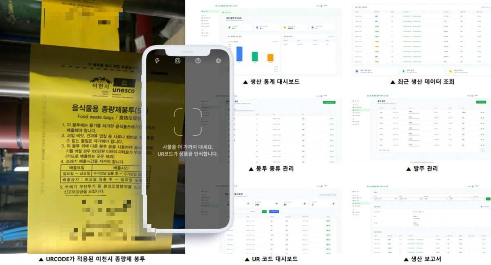
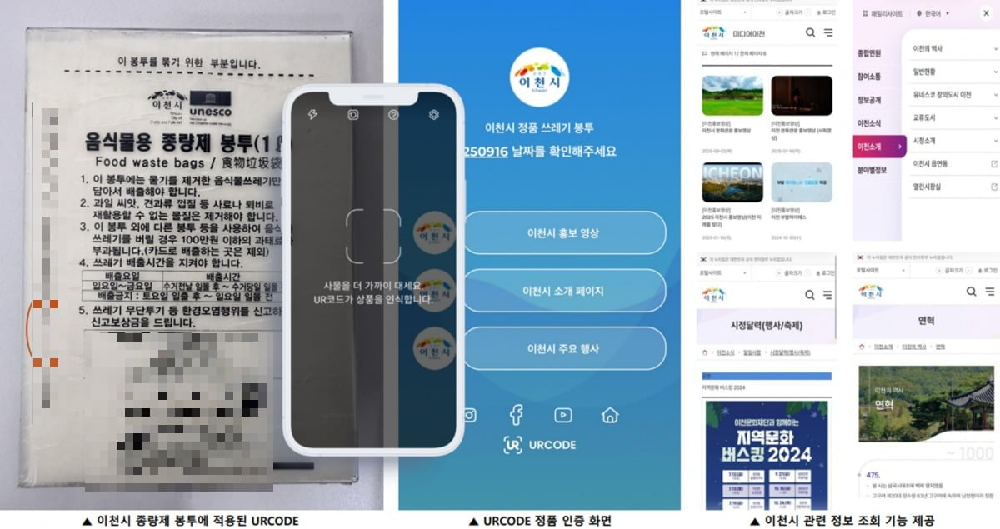
KGC 正官庄：生産ラインと個々の製品の連携
正官庄の原州（ウォンジュ）工場にある「エブリタイム」生産ラインでは、URCODEを用いた真贋認証・生産管理が導入されています。製品ごとの固有コードと生産履歴を結び付ける仕組みは、貴社の入退場・作業履歴の管理にも活用できます。[3]
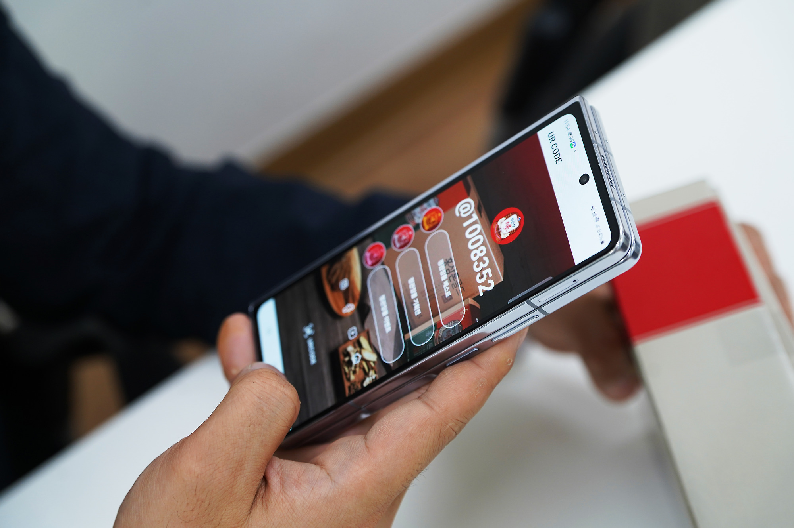
貴社への適用におけるポイント：コードの認識にとどまらず、「対象の識別 → 履歴の保存 → 業務システムでの活用」までつなげることです。上記事例で培った印刷・読み取り・データ連携の経験を基に、工場の人員識別に向けた構成をご提案いたします。
07デモンストレーションから導入構成の検討へ
韓国にお越しの際には、小型の不可視コードの個別読み取りと、産業用の遠距離読み取り・マルチスキャンを比較していただけるデモンストレーションをご提案いたします。貴社で実際に使用される作業服・名札や動線を反映することで、技術の特長と導入構成をより具体的にご検討いただけます。
| デモンストレーション項目 | ご確認いただく内容 |
|---|---|
| 不可視コード・写真の読み取り | パターンの外観、印刷・貼付方法、実物および保存画像の読み取り |
| 距離・適用面積 | 小型コードと表面への適用範囲を広げたコードの、距離別の認識状況 |
| マルチスキャン・移動中の読み取り | 複数コードの同時処理、指定区間を通過するコードの読み取りと記録 |
| 業務システムとの連携 | コードと利用者・商品情報の連携、履歴および管理画面 |
ご訪問の希望日と参加人数、優先的に適用される工場・施設、想定対象人数、通路の構成、候補となるカメラおよび作業服のサンプルをご共有いただけましたら、デモンストレーションの日程、おすすめの構成、初期導入のお見積りを併せて準備いたします。稼働現場の見学については、当該事業所の日程と公開可能な範囲に応じて調整いたします。
参考資料・画像出典
[1] Byline Network、キム・ソンス代表インタビュー (2025.06.12) · スキャン速度、プラットフォーム・APIおよび料金体系。
[2] The Vivid、キム・ソンス代表インタビュー (2026.02.09) · 表面への適用範囲を広げたコードの約150cmでの読み取り、および各種素材への適用。
[3] INOFRIENDS公式 K-BRAND · URCODEの技術図解および正官庄の導入事例。
[4] 電子新聞 (2026.02.04) · 会社提供のマルチスキャン紹介画像。
[5] INOFRIENDS UR_MultiScan_Brocher_v0.1 · インビジブル・マルチスキャン、同時処理数および読み取り距離の仕様。
[6] INOFRIENDS研究ノート D-250006 (2025.11.10) · プラスチック製インビジブルパターン試験片の60cmでの読み取り結果。
[7] 韓国経済新聞 (2026.02.04) · 利川（イチョン）市の従量制指定ごみ袋への適用事例および写真。
[8] INOFRIENDS少量ステッカー提案見積書 · 供給用100枚およびテスト用10枚の構成。
その他の作成根拠：株式会社デジタルピア様の追加ご質問書、当初のご案内回答、INOFRIENDS社内の料金・SDK・連携資料。社内の技術・試験・製品資料の仕様を反映しています。公開資料は上記リンクよりご覧いただけます。